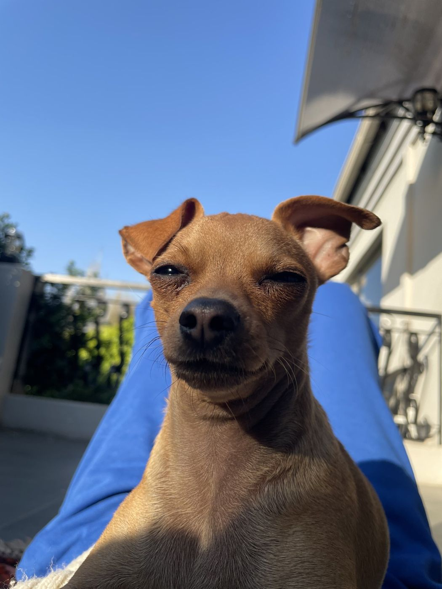
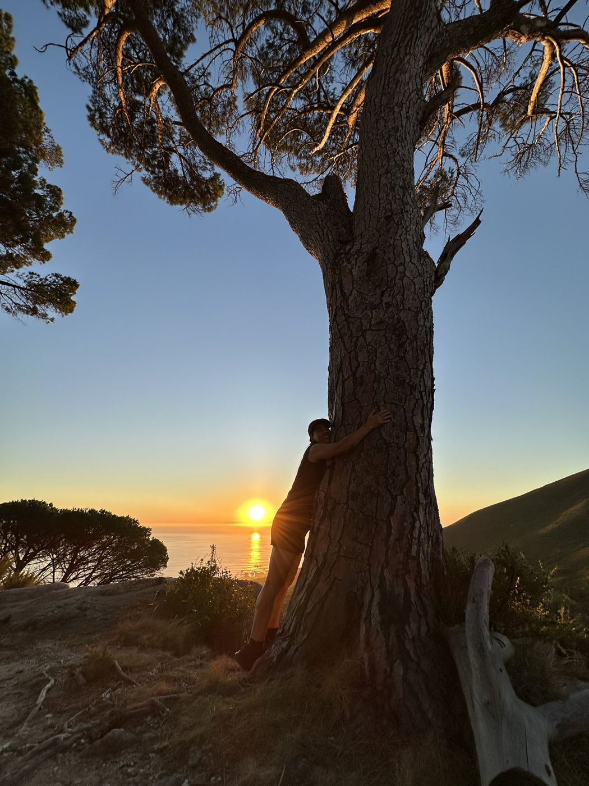
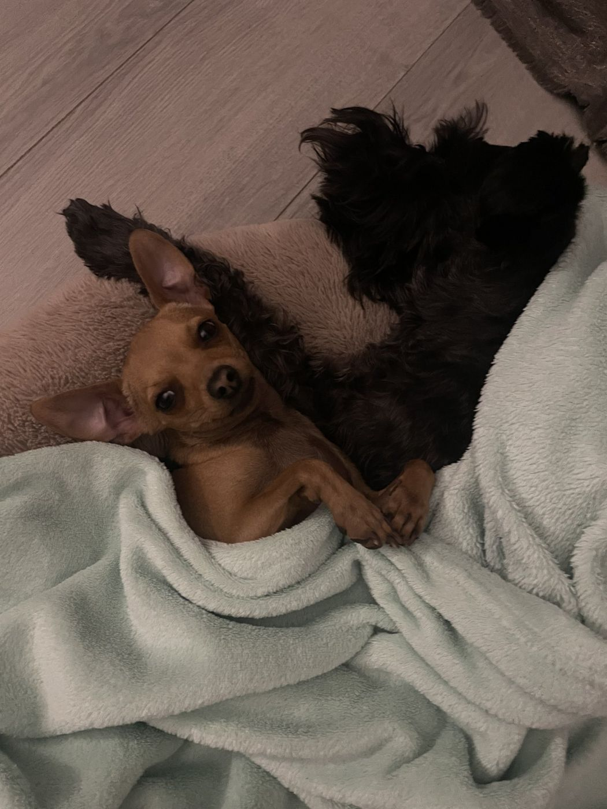
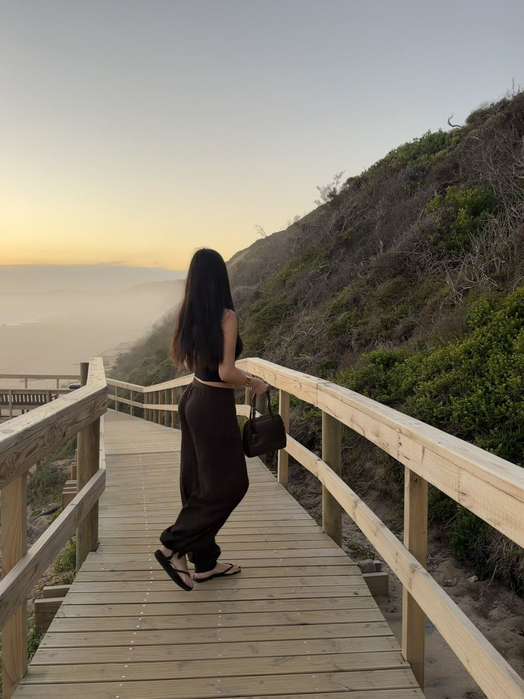
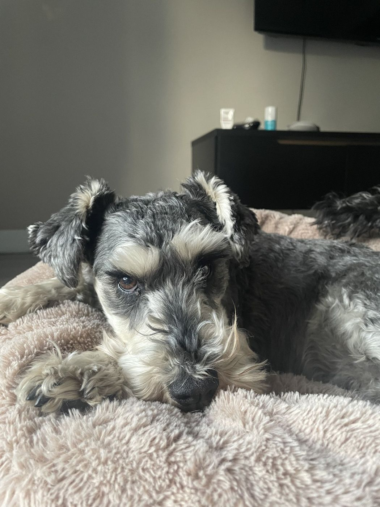
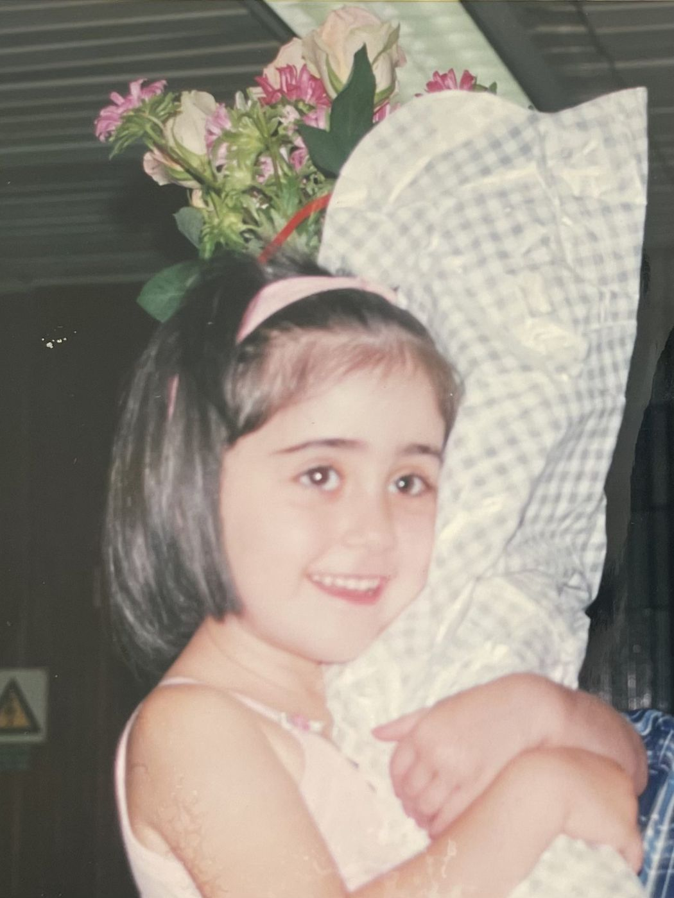
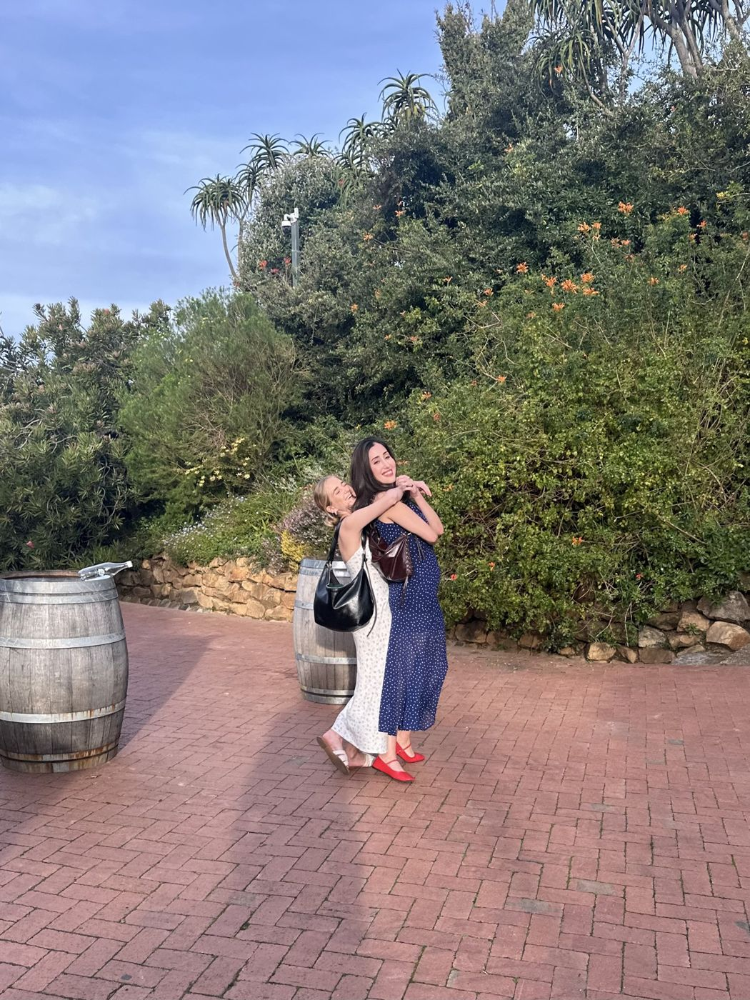

- Piano
- Running
- Strength training
- Yoga
- Crafts
- Photography
- Building random things with AI
- Creating AI portraits of my friends
- Practicing mindfulness
- My family, friends, and dogs
- Learning new things
- Spending time outdoors
- Hiking
- Floating in calm bodies of water
- Architecture & interior design
- Fashion
- Rock climbing
- Pranks
- Crossword puzzles
- Board games (especially trivia ones)
- Baking
- History
- Water parks
- Being described
- Handwritten cards/notes
- Interpretive dance (watching, not doing)
- Tuvan throat singing
- Karaoke
- Blind karaoke









